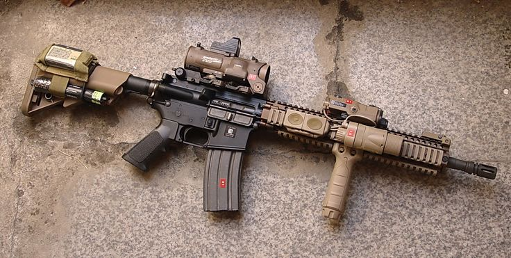

Tools
So you have decided to build your first black rifle. Here are some tools you will need to get the job done and some that just make assembly much easier.
- Workbench, Vise, & Lower receiver block
There are many small little pieces that make up a AR. So it's pretty obvious that having a clean work space to lay everything out as you go will make life a lot easier. You will need a vise, preferably one solidly mounted to a bench. Also you will need a lower receiver block to hold the lower receiver inside of the vise. This will help prevent scratching and marring your brand new lower receiver.
It is strongly recommended having 2 sets of punches. 1 set of drive pin punches (1/16 – 5/16) and 1 set of roll pin starter punches. The benefit of roll pin punches is the nipple on the on the face of each of the roll pins assist with automatically centering the punch and prevents the roll pin from collapsing. Starter punches are great for the fact they 'hold' the roll pin while you begin to get it inserted. Once a pin is set to be 'started' the roll pin punches take over the load.
- Hammers, Wrenches, Screwdrivers and Allen keys
- Hammers; While some people swear that you must have a 4oz ball peen hammer and a Nylon/Brass Hammer this author has built many a rifle with just a basic carpenters hammer (ie Wal-Mart Special).
- Armorer's Wrench: A armorer's wrench will allow you to install a free float tube, barrel nuts, receiver extensions and the castle nut and should have a place to attach a Torque Wrench.
- Torque Wrench: Needed to insure the barrel is torqued to spec and the castle nut is torqued to spec.
- Screwdriver: A minimum 3” long screw driver will be needed to install the pistol grip to the lower receiver.
- Allen keys: While there are no actual Allen screws to assemble a base AR you will find it handy to have a larger Allen key on hand when you install take down detents.
- Others:
- Blue Loctite: A small tube of Blue Loctite (non-permanent) will go a long way and will be needed when securing screws and other threaded items onto your rifle.
- Tape: While not needed, strongly recommended when installing small exterior parts onto your lower to prevent marring and scratching your lower. Blue dollar store special painter's tape works well.
